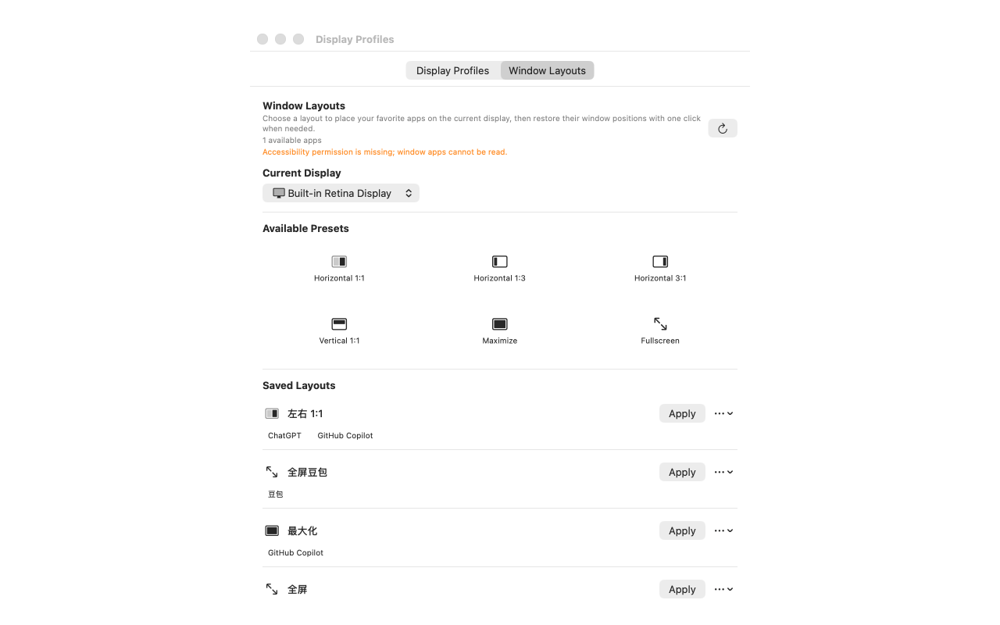

Display profiles
Capture the arrangement and mode of your connected displays, then bring it back when your setup changes.
macOS workspace utility
DisplayPreset saves display configurations and window layouts so you can restore the workspace you need in a moment.
TestFlight access may require an invitation.
Capture the arrangement and mode of your connected displays, then bring it back when your setup changes.
Save a workspace layout and restore application windows with the positions that fit your workflow.
Your profiles stay on your Mac. No account or cloud sync is required for this MVP.
See it in action


One-time unlocks
$0
1 display profile
1 window layout
$2.99
Unlimited display profiles
$2.99
Unlimited window layouts
$3.99
Unlimited profiles and layouts